Customer churn is when a customer cancels their subscription or stops using your service. This can happen for many reasons, from being unhappy with the service to finding a better deal with a competitor.
Understanding why customers leave is crucial for a business because a long-term customer base means a stable, predictable stream of revenue. The longer a customer stays subscribed, the more valuable they are.
While this is easy to see in industries like telecommunications, the subscription model is common in many other sectors:
A *lower churn increases the Customer Lifetime Value** (CLV).
Lowering your average churn rate means customers stay subscribed for longer, boosts your Customer Lifetime Value (CLV), also known as Lifetime Value (LTV), which directly leads to higher total revenue over time.
Survival analysis is a powerful statistical method for modeling churn. While traditionally used in medicine to track how long patients “survive” before an event like death, it can be applied to business to understand customer behavior.
By using Survival Analysis, we can gain valuable insights into churn, such as:
Survival Analysis provides deep insights into customer behavior, allowing us to:
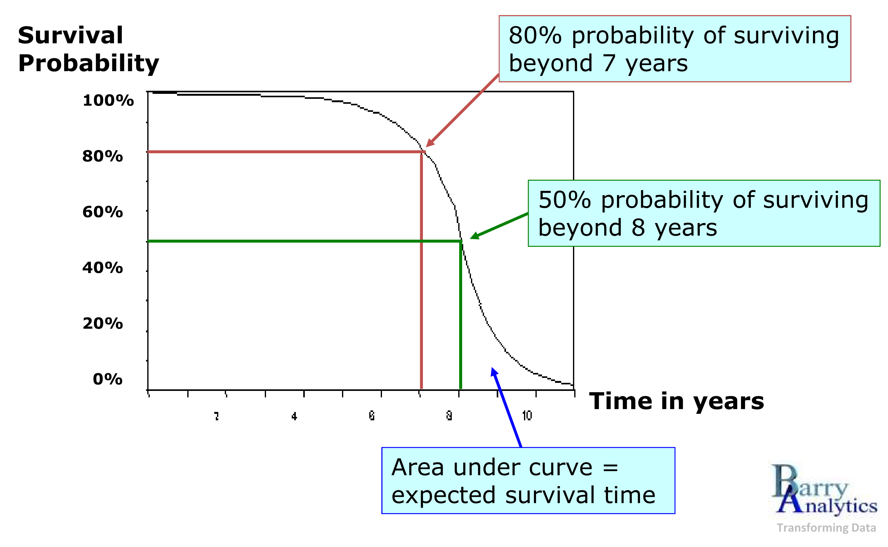
Survival regression, a related technique, takes this further by allowing us to model the relationship between churn, time and specific customer characteristics (known as covariates). This helps us identify and quantify the factors that drive churn.
For this analysis, we use a dataset provided by IBM that details a fictional telecommunications company’s subscriber base.
The dataset includes information on 7,043 customers, with 20 variables per customer. The majority of these variables are categorical:
gender, SeniorCitizen, Partner, Dependents, PhoneService, MultipleLines, InternetService, OnlineSecurity, OnlineBackup, DeviceProtection, TechSupport, StreamingTV, StreamingMovies, Contract, PaperlessBilling, PaymentMethod and Churn.tenure, MonthlyCharges and TotalCharges.Our Survival Analysis focuses on the duration of each subscription, or tenure. Customers are categorized based on their churn status: Churn = 1 for those who opted out during the observation period and Churn = 0 for those who remained subscribed.
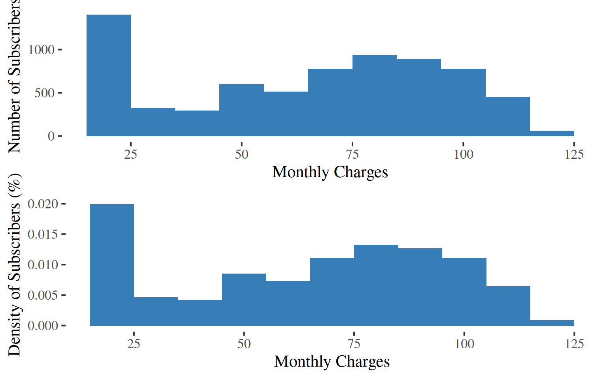
Mean Montly Charge
64.76
Median Montly Charge
70.35
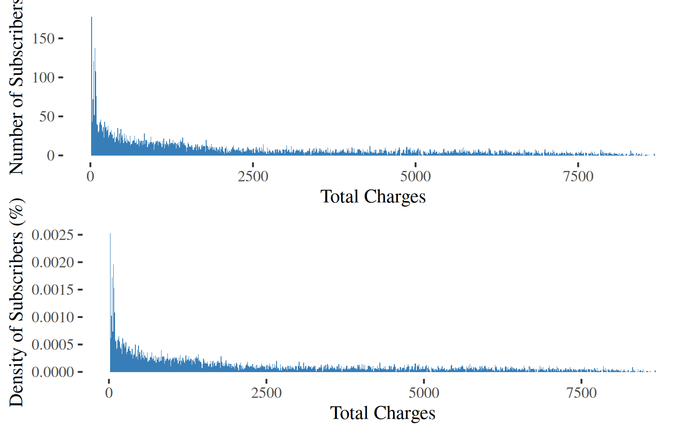
Mean Total Charge
2283.3
Median Total Charge
1397.47
The survival curve is a fundamental tool in Survival Analysis. It illustrates the probability that a customer will remain subscribed over a given period. As time progresses, the probability of survival decreases and the risk of churn increases.
tenure and Churn are the two dependent variables.
We begin with a Weibull Proportional Hazards (PH) model, using two independant variables or covariates:
Contract type.MultipleLines.A covariate is an explanatory variable used in a model.
The Weibull distribution is a common choice for estimating the survival curve, as it is a natural fit for modeling time-to-event data, such as a machine’s time to failure, a patient time to death or a customer’s time to churn.
The hazard curve (or function) is decreasing. The hazard of churn is highest in the first 7 to 10 months (duration). After this initial period, the hazard rapidly declines and then flattens out.
This behavior directly explains the shape of the survival curve (or function) : the high initial hazard causes the steep drop in the number of subscribers, while the subsequent decline and flattening of the hazard curve is reflected in the survival curve’s deceleration over time.
A comprehensive breakdown of every coefficient, calculation, ratio and rate – including their full interpretations – is beyond the scope of this dashboard.
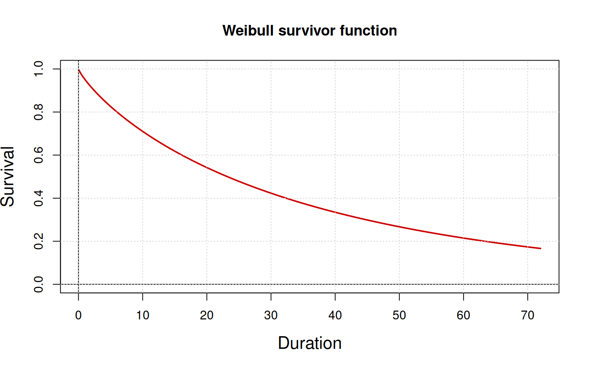
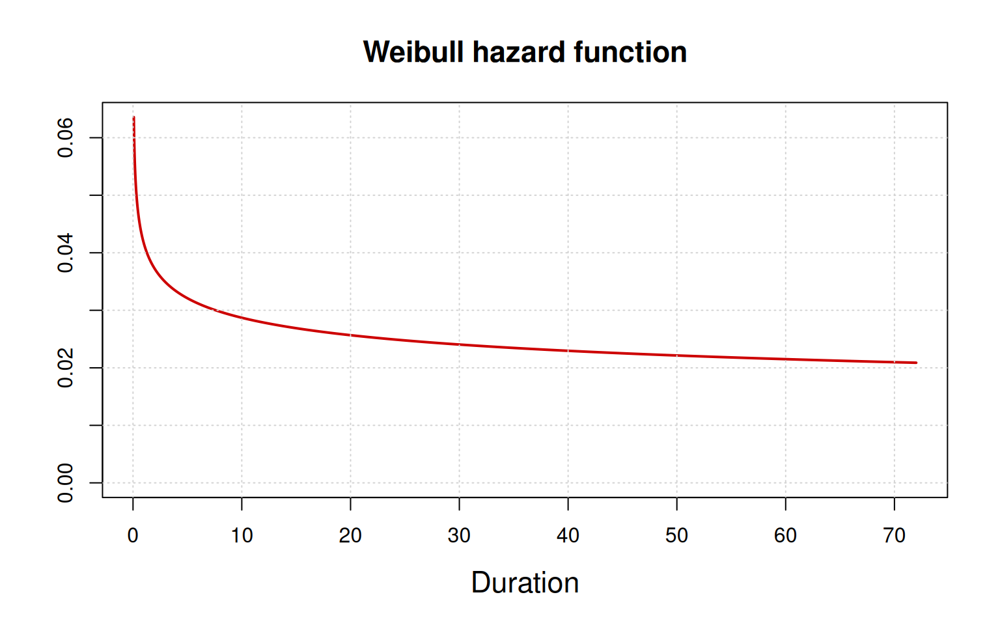
The survival curve (or function) is a vital tool for validating whether the analytical model aligns with your business’s understanding of the customer lifecycle.
As time passes (longer duration in months), the number of subscribers steadily decreases (the pourcentage of subscriber since the inception).
The survival curve reveals a significant churn rate, with the survival rate dropping to 50% after just 24 months. Due to this substantial early churn, long-term predictions become less reliable. For example, with fewer than 20% of the original subscribers remaining after 70 months, the model’s ability to make precise forecasts is significantly reduced.
With tenure and Churn as the dependent variables, the models uses two independant variables or covariates: Subscribers’ Contract type and whether they have MultipleLines.
One-year and two-year contracts decrease the hazard of churn, holding all other variables constant. A contract is effective at reducing churn risk, making the curve less steep, indicating a lower risk and better survival. For example, a two-year contract has the highest positive effect, making the curve less steep (a shallower descent) and showing better survival over time.
In Survival Analysis, we can also compare survival curves across different customer segments to gain deeper insights into churn behavior.
We might want to know if there is a difference in churn rates between genders.
| Female | Male | |
|---|---|---|
| No | 36.19 | 37.27 |
| Yes | 13.33 | 13.20 |
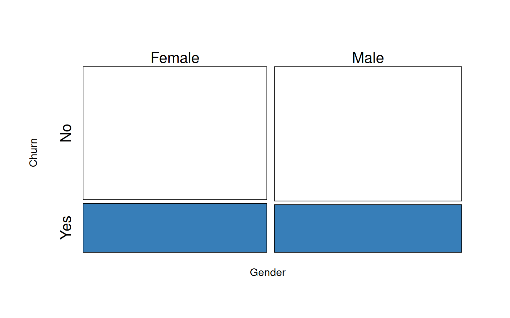
It appears that the churn rates for males and females are quite similar.
While a simple count of total churned customers by gender is a good starting point, it does not account for the duration of their subscriptions or the size of each group. Survival Analysis allows us to move beyond these simple counts to see if the risk of churn changes differently for each segment over time.
With tenure and Churn as the dependent variables, the models uses two independant variables or covariates: Subscribers’ Contract type and whether they have MultipleLines.
We stratify the results by gender.
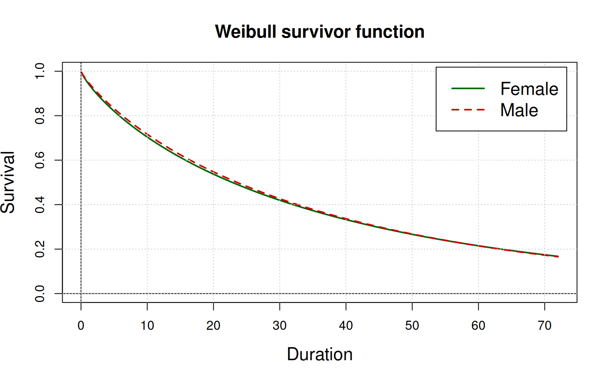
The survival curves for the subgroups are nearly identical and closely resemble the survival curve of the overall population. This suggests that gender does not have a significant impact on duration or survival time.
What would be the difference between customers who have Dependents (children) or not.
With tenure and Churn as the dependent variables, the models uses two independant variables or covariates: Subscribers’ Contract type and whether they have MultipleLines.
This time, we stratify the results by Dependents (children) or not.
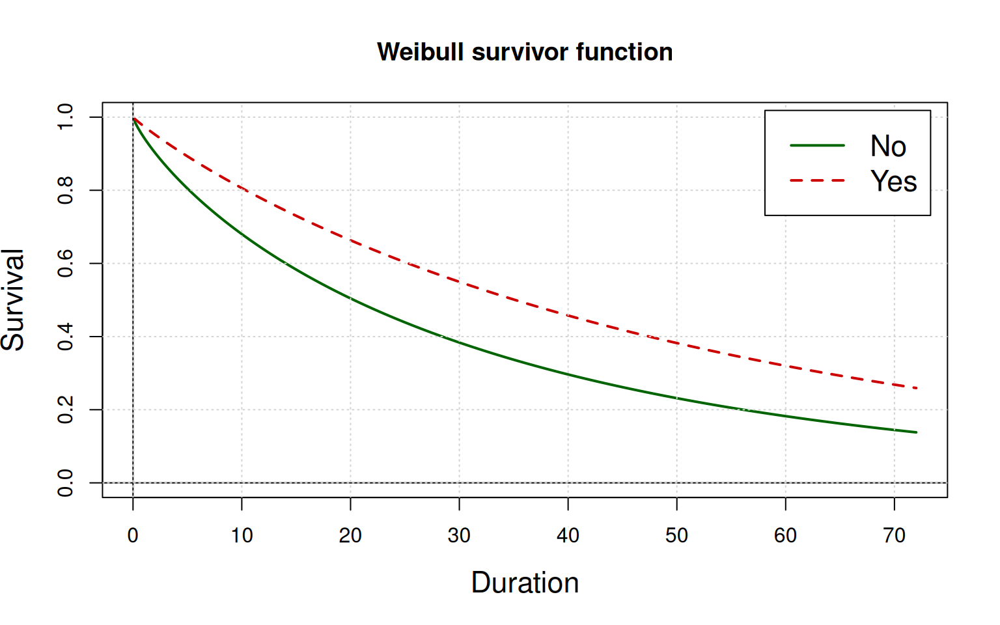
Covariate Dependents (children) does have a meaningful impact on churn and on duration or survival tim.
The survival curve for customers with Dependents (children) is noticeably higher than the baseline curve. This visual evidence suggests that customers with dependents are more loyal and have a significantly higher probability of remaining subscribed at any given point in time.
To determine if this difference is statistically significant, we would perform a log-rank test. The test would likely result in a rejection of the null hypothesis, which states that the two survival curves are identical.
log-rank test statistic = \(-\tfrac{loglik}{df}\) where \(loglik\) is the Max. log. likelihood or the maximum log(likelihood).
The log-rank test statistic is 2322.385, giving a p-value = 0, way below 0.05 or 5%. The test is statistically significant and we can reject the null hypothesis. The two survival curves are different. The test was done : it is statistically significant and we can reject the null hypothesis.
The two survival curves are different.
Based on these findings, the marketing department should prioritize customer segmentation based on whether subscribers have children (Dependents), as this group has a significantly higher survival rate.
Conversely, the analysis revealed no statistically significant difference in churn rates between genders, so focusing marketing efforts on gender composition would be an inefficient use of resources.
We fit a time-constant Cox Proportional Hazards (PH) model using the same set of dependant variables: tenure and Churn. The covariates are : PaperlessBilling, SeniorCitizen, Dependents and Gender.
You cannot directly interpret the time-related parameters of a Cox PH model in the same way as a Weibull model because they are fundamentally different types of models.
Cox models are semi-parametric, which means they do not assume a specific shape for the baseline hazard function. In contrast, Weibull models are parametric, as they assume the baseline hazard follows a specific distribution (the Weibull distribution). This difference in assumptions is why the Weibull model provides interpretable shape and scale parameters, while the Cox model focuses solely on the hazard ratios.
The hazard function represents the instantaneous risk of the event (churn) over time, given that the event has not occurred yet. The baseline hazard is the hazard for a subscriber in the reference category (where all covariates equal 0).
The red dots are the observed. The green line is the predicted survival curve. The graphic is similar to a Q-Q plot to estimate normality (compare a covariate distribution in red against the Gaussian or Normal distribution in green). The discrepancy, particularly at the extremes, is a normal part of modeling real-world data. It indicates that the model’s fit is not perfect, which is to be expected.
The survivor function gives the probability of a subscriber remaining (not experiencing the event of churn) over time. This curve is directly derived from the hazard function. The shaded area or two bands around the curve represent the confidence interval, which provides a range of likely values for the true survival curve and a measure of the uncertainty in the model’s estimate.
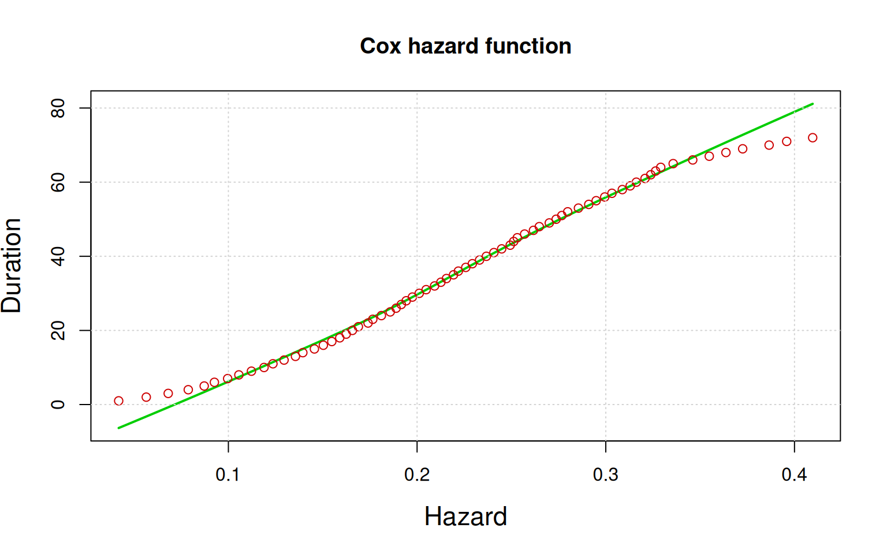
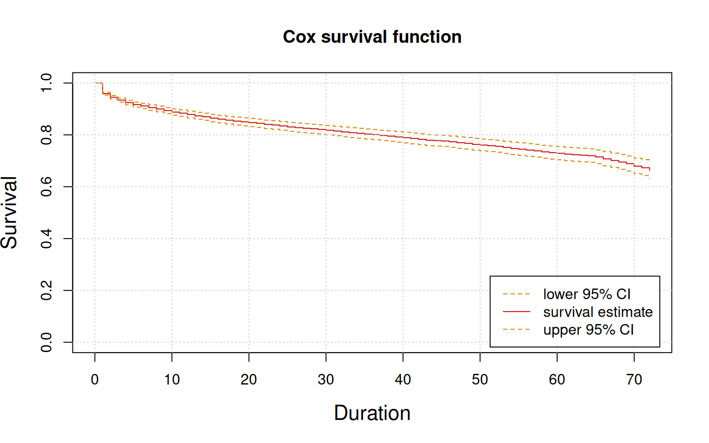
Unlike the Weibull PH model which can show an initial high hazard that drops and flattens out, the Cox PH model with a constant hazard would have a survival curve that drops at a steady, exponential rate over time. This means the risk of churn is consistent regardless of how long a customer has been subscribed. The curve would not show a substantial early drop followed by a flattening, as that behavior is typical of a decreasing hazard – a scenario where the risk of churn lessens over time.
The survival curves for different categories visualize the probability of remaining over time. The group with the higher hazard ratio (when PaperlessBilling is Yes) will have a lower survival curve that descends more rapidly. Conversely, the group with the lower hazard ratio (when Dependents is Yes) will have a higher survival curve that descends more gradually, indicating a longer average survival time.
The survival curves for the different categories are not parallel. They will start at 1.0 (100% survival at time 0) and diverge over time, with the lower-hazard group maintaining a higher survival probability. The difference between the curves is most pronounced when the hazard is highest, and they tend to flatten out as the hazard approaches zero.
Based on the Cox PH model, we identified three significant covariates of churn. To compare their impact on an equal footing, we display their hazard ratios, which are expressed in positive, absolute terms.
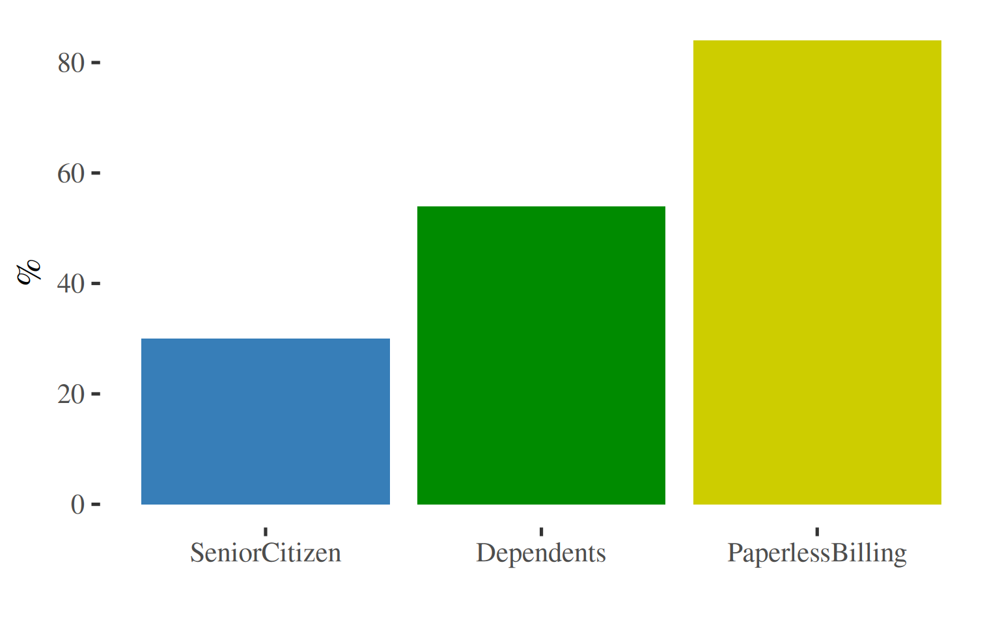
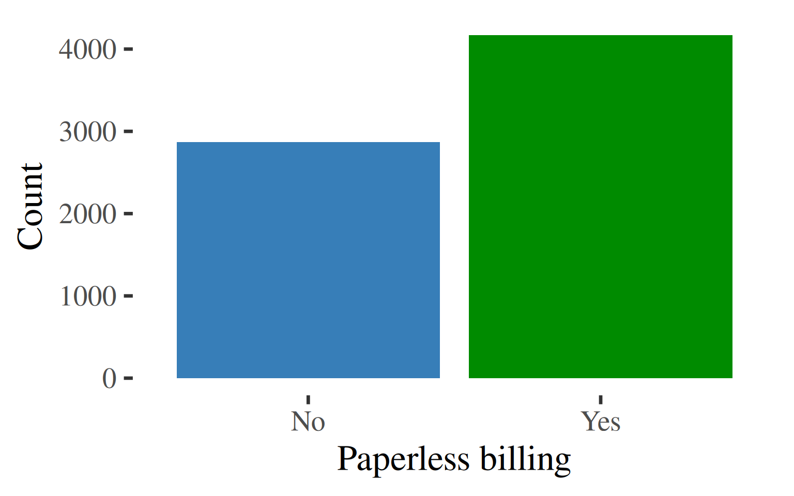
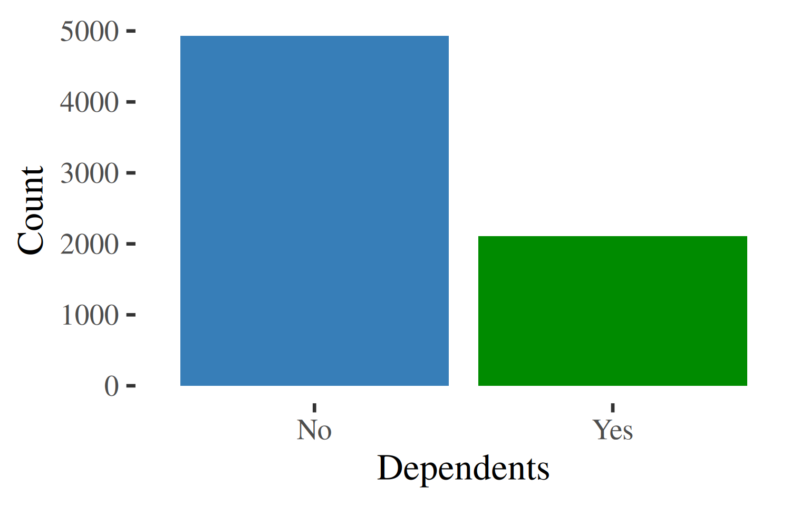
While the hazard ratio for SeniorCitizen may be the lowest in magnitude compared to the other significant covariates, it is still a statistically significant factor influencing churn.
A more strategic approach is to prioritize resources based on the magnitude of each covariate’s impact. Given that the other covariates have a much larger effect on churn, marketing and retention efforts would likely be more effective if focused on those factors first.
The SeniorCitizen factor, while statistically relevant, may be a lower priority for initiatives aimed at curbing churn.
The finding that PaperlessBilling is a significant covariate in churn is not surprising. It suggests a correlation between a preference for paperless billing and a customer segment that may be more tech-savvy and responsive to new product offerings. This group might be more prone to churning for a new contract that includes the latest devices and gadgets. Given that the majority of the customer base falls into this category, this represents a major business risk. The company should investigate the underlying drivers of churn within this segment to develop targeted retention strategies.
Based on the model, customers with Dependents are a highly valuable segment. Although they represent a smaller portion of the customer base compared to those without children, they are significantly more loyal.This finding suggests a strong business case for retaining this segment. The company should prioritize efforts to identify and cater to these customers, perhaps with family-oriented plans or loyalty programs that recognize their value.
Survival Analysis is a versatile tool for addressing a variety of business situations:
Ultimately, these applications all have a direct impact on the Customer Lifetime Value (LTV). Furthermore, this analysis can be extended to evaluate the potential of win-back initiatives by estimating the LTV of reactivated customers.
Additional Resources
The survival package documentation.
The eha (event history analysis) package documentation.
For multiple comparisons, ggplot2 does facet layouts.
If modeling time-varying Cox proportional hazards regression model, tidyr is useful for reshaping wide data.frames into long data.frames.
With the mstate package, we can model multistate and competing risks. LTV or win-backs imply multistates.
Dayne Batten’s blog posts on Survival Analysis in the business setting.
Barry Leventhal’s presentation with business insights.